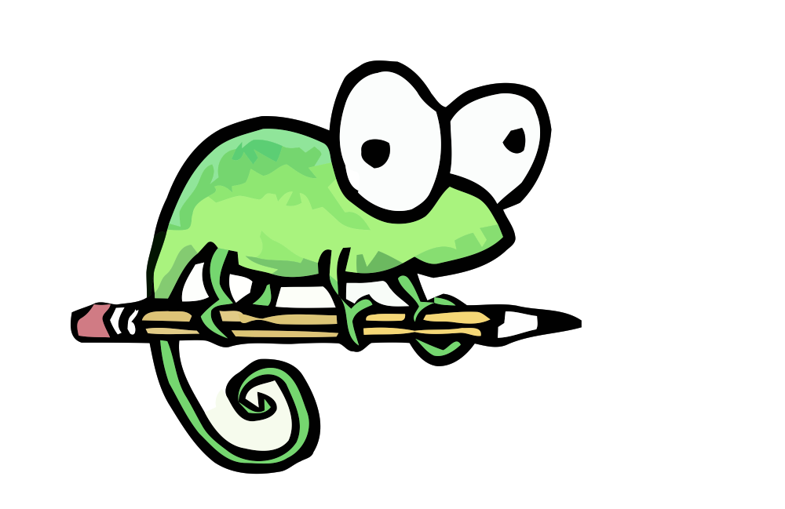
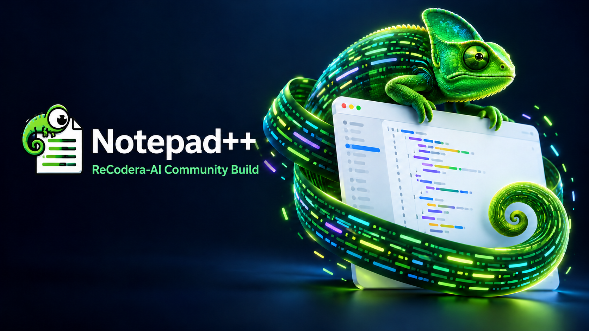

Mixed Arabic and English in LTR
Corrected visual placement of right-to-left Arabic runs inside left-to-right documents, including lines that mix both scripts.

Notepad++ReCodera-AI Community Build
Focused fixes for real editor workflows, shaped through careful engineering and AI-assisted verification.
Choose a cover direction
Current improvement set
This community build focuses on the display and persistence issues reported while editing Arabic and English documents.
Corrected visual placement of right-to-left Arabic runs inside left-to-right documents, including lines that mix both scripts.
Save and restore a file’s display direction when changing tabs, reopening documents, or recovering a session.
Keep the preferred DirectWrite technology in LTR mode and use a compatible rendering path for mirrored RTL views.
Release availability
This community release currently contains source code and release notes only. No verified application packages are attached.
The upstream release offers standard, x64, and ARM64 installers; an x64 MSI; and portable 7z/ZIP packages for x86, x64, and ARM64, including minimalist archives. This community release is source-only: no installer or archive has been built and verified. See upstream package files.
No native macOS build is provided by the original Notepad++ project or this community release. There is no Mac download.
No native Linux build is provided by this release. Do not use Windows installers on Linux.
Why ReCodera-AI
ReCodera-AI works on improving open-source projects by using AI-assisted analysis alongside human-directed engineering and verification. The aim is practical: investigate reported problems, trace them to their source, and contribute focused improvements back to the communities that maintain these tools.
This repository is an independent community build. It does not claim ownership of Notepad++ or speak on behalf of its maintainers.
Keep the work moving upstream
Explore the source, read the release notes, or prepare a focused pull request for the original Notepad++ repository.